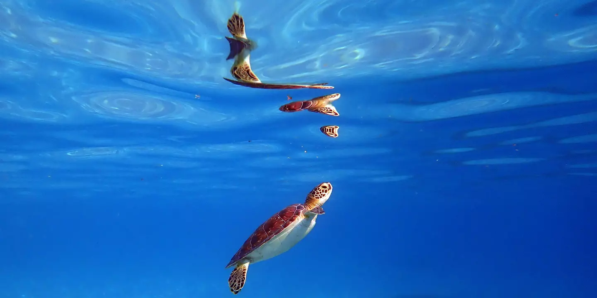
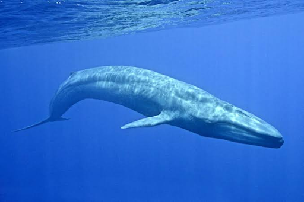
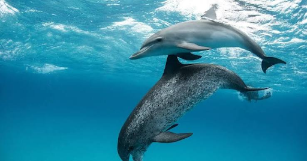
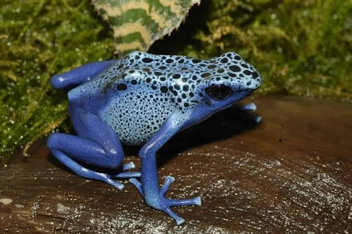
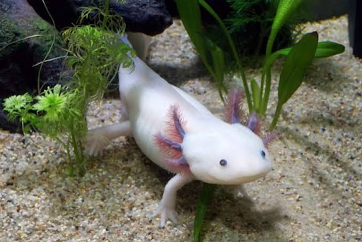
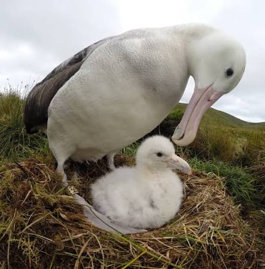

Eco
Sphere


Tartaruga-de-pente Criticamente em perigo O plástico, as redes de pesca abandonadas e a poluição dos oceanos podem feri-la ou matá-la.
Tartaruga-de-pente Criticamente em perigo O plástico, as redes de pesca abandonadas e a poluição dos oceanos podem feri-la ou matá-la.


Tartaruga-de-pente Criticamente em perigo O plástico, as redes de pesca abandonadas e a poluição dos oceanos podem feri-la ou matá-la.
Tartaruga-de-pente Criticamente em perigo O plástico, as redes de pesca abandonadas e a poluição dos oceanos podem feri-la ou matá-la.


Tartaruga-de-pente Criticamente em perigo O plástico, as redes de pesca abandonadas e a poluição dos oceanos podem feri-la ou matá-la.
Tartaruga-de-pente Criticamente em perigo O plástico, as redes de pesca abandonadas e a poluição dos oceanos podem feri-la ou matá-la.

Tartaruga-de-pente Criticamente em perigo O plástico, as redes de pesca abandonadas e a poluição dos oceanos podem feri-la ou matá-la.
Baleia-franca-do-Atlântico-Norte Criticamente em perigo A poluição sonora pode interferir na comunicação; também sofre com redes de pesca e colisões com navios.
Golfinhos e outros cetáceos Golfinho-de-hector são vulneráveis aos plásticos e aos contaminantes.
Rãs tropicais Muitas espécies são vulneráveis a pesticidas, resíduos químicos e contaminação das águas.
Axolote Criticamente em perigo A poluição da água e a perda de habitat são ameaças importantes à sua sobrevivência.
Albatrozes Várias espécies ameaçadas Engolem frequentemente plástico confundido com alimento e podem ficar presos em aparelhos de pesca.